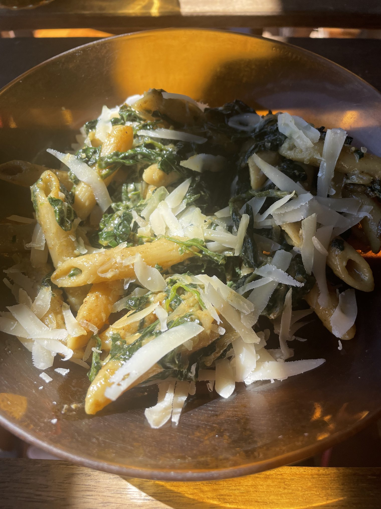

Pasta con espinacas al curry, crema de soja y parmesano
Ingredientes
2×
- 1 cebolla
- aceite de oliva
- 1 bolsa de espinacas lavadas
- 1 cdta de curry picante
- 1 cdta de curry normal
- un poco de jerez
- 200 ml de crema de leche de soja
- 40 g de parmesano
- 200 g de penne

Preparación
Paso 1
Sofreír 1 cebolla picada con aceite de oliva. Luego tirar 1 bolsa de espinacas lavadas y saltear hasta que bajen.
Paso 2
Añadir 1 cdta de curry picante, 1 cdta de curry normal y un poco de jerez, y dejar que se evapore.
Paso 3
Por último, añadir 200 ml de crema de leche de soja y 40 g de parmesano.
Paso 4
Mezclar con 200 g de penne cocidos y servir con más parmesano en lascas por encima.
Resumen
1 cebolla
aceite de oliva
1 bolsa de espinacas lavadas
1 cdta de curry picante
1 cdta de curry normal
un poco de jerez
200 ml de crema de leche de soja
40 g de parmesano
200 g de penne
Sofreír saltear